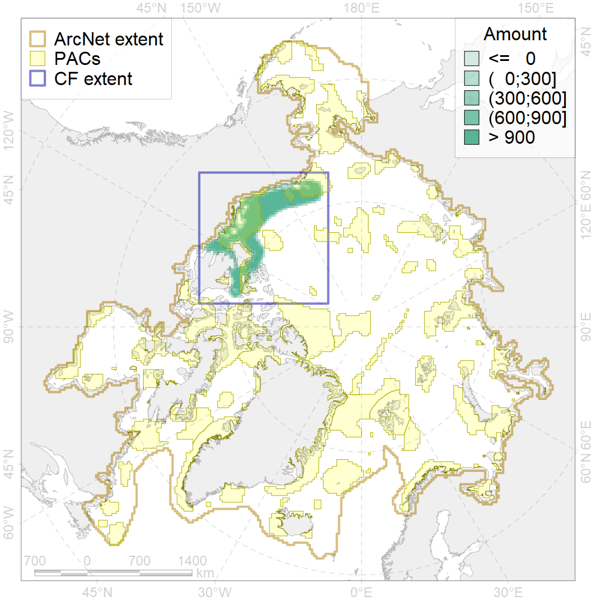
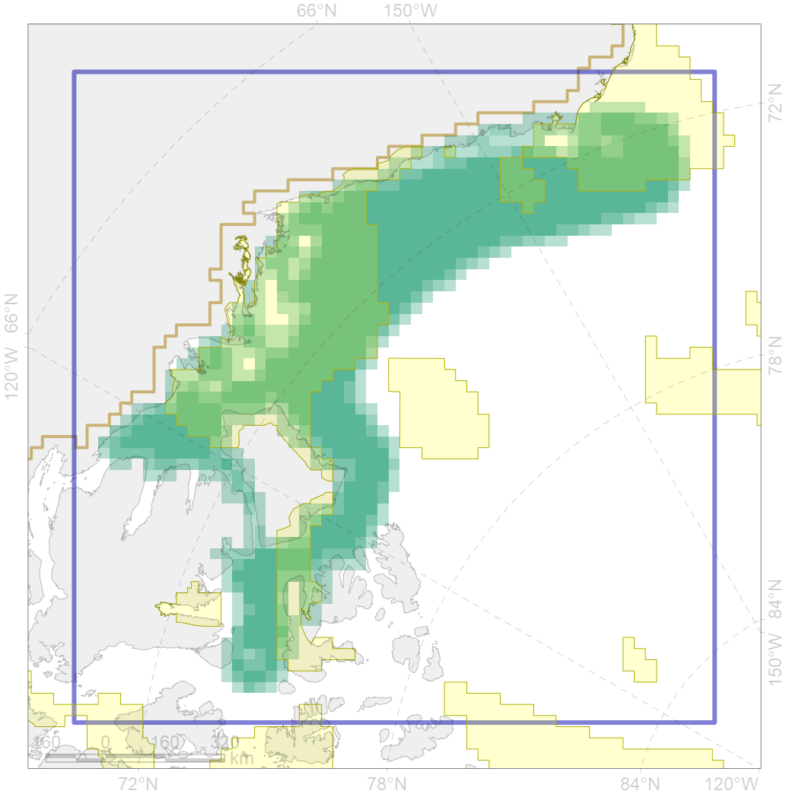

5108

| CF code | 5108 |
| CF name | Bowhead whale of the Bering-Chukchi-Beaufort population summer distribution |
| Time Period | 2006–2011 |
| Source(s) | Quakenbush et al 2012 |
| Seasonality | June-August |
| Depth Horizon | 0-250 |
| Methodology | Satellite tagging |
| Use Restrictions | |
| Author Name | Filatova |
| Notes | |
| Scenario’s Target | 0.288 |
| Target Achievement | 0.465 (Scenario: 161.5%) |
| PAC | Share of the Total Amount within the PAC | Share of the Target Achievement for the ArcNet | PAC’s Contribution to the Target Achievement |
|---|---|---|---|
| 60 | 11.7%12.1% | 34.6%35.0% | 21.4%21.7% |
| 61 | 0.1% | 0.3% | 0.2% |
| 62 | 29.6%29.8% | 93.3%93.8% | 57.8%58.1% |
| 63 | 3.2%3.3% | 8.0%8.1% | 4.9%5.0% |
| inner | 44.7%45.3% | 136.1%137.2% | 84.3%85.0% |
| outer | 55.3%57.2% | 25.3%30.5% | 15.7%18.9% |
| † supplement values are for area consistence whereas principal values are for Accenter compatible gridded stats |